{% extends '/home/tarena/project/AutoOffice/OA/excel/templates/excel/header.html' %} {% block content %}
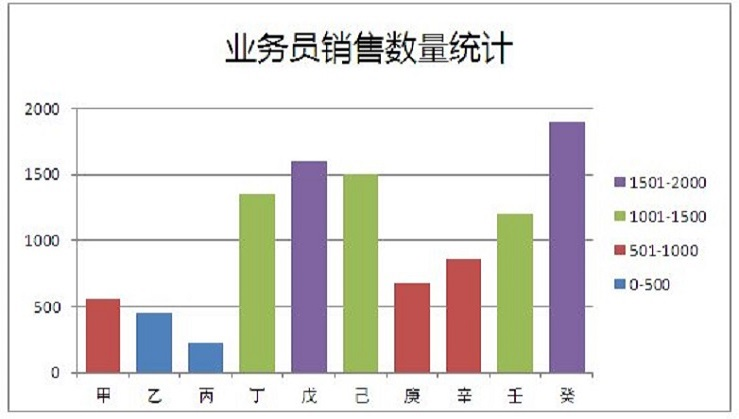 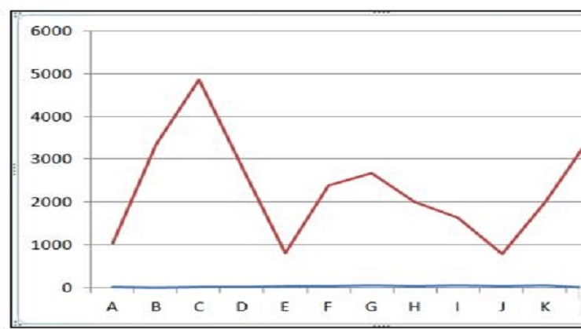 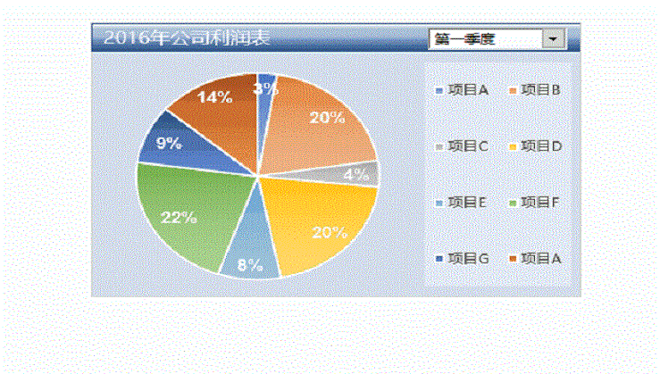
{% csrf_token %}
生成数据图表
----请选择可视化图形----
柱状图
折线图
饼图
下载文件
excel文件格式
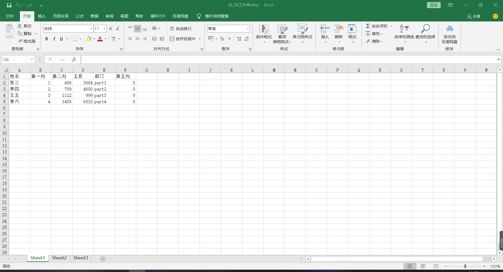
{% endblock %}
 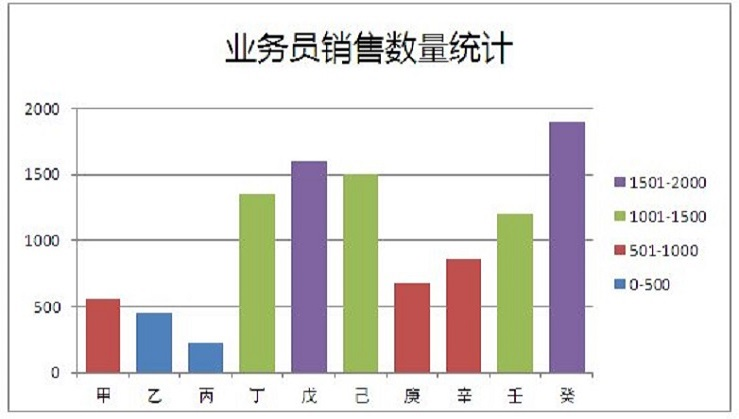
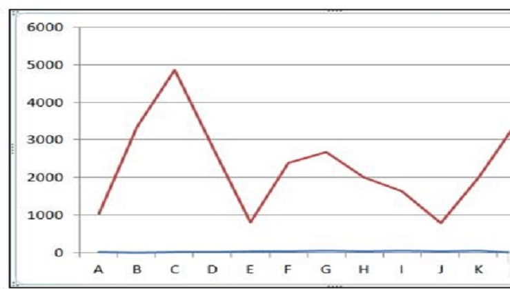
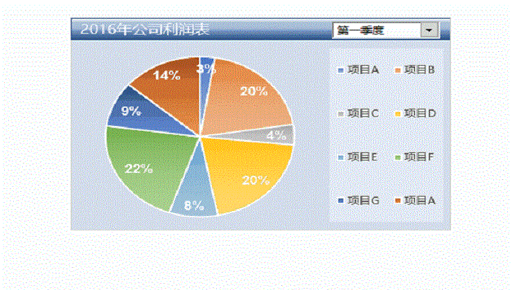
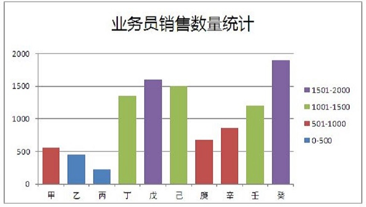
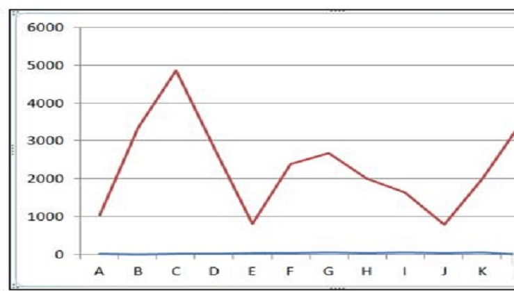
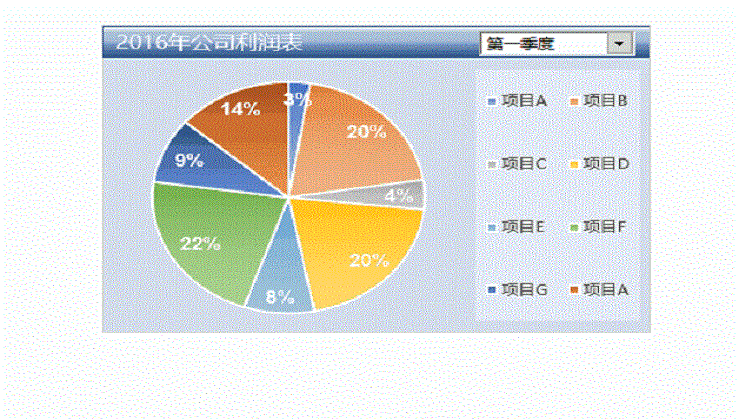

 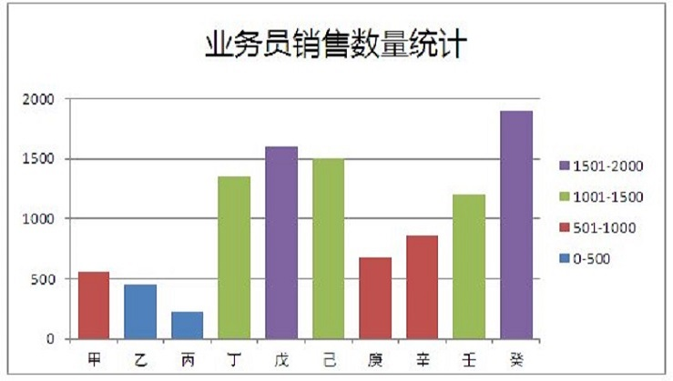
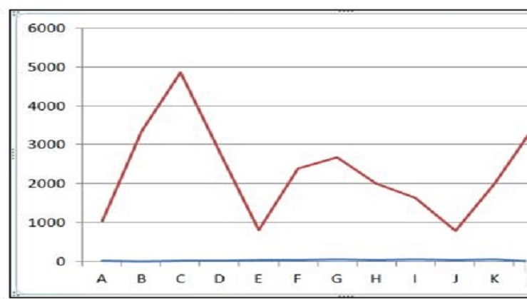
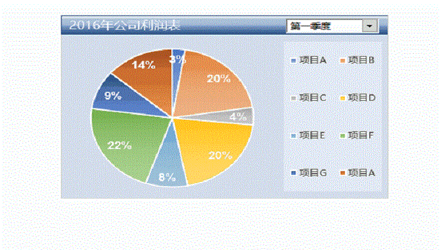
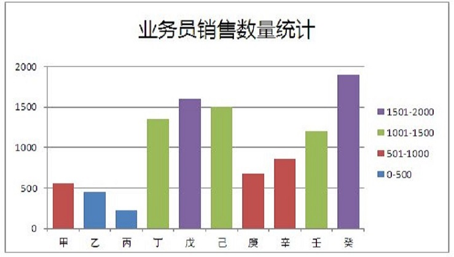
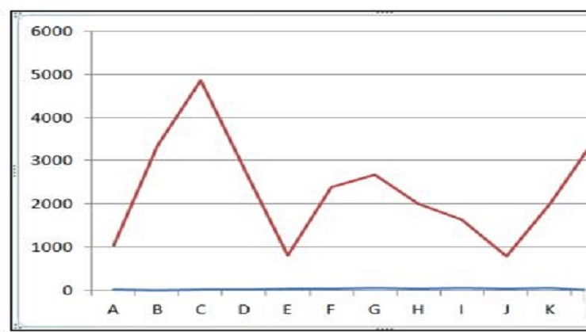
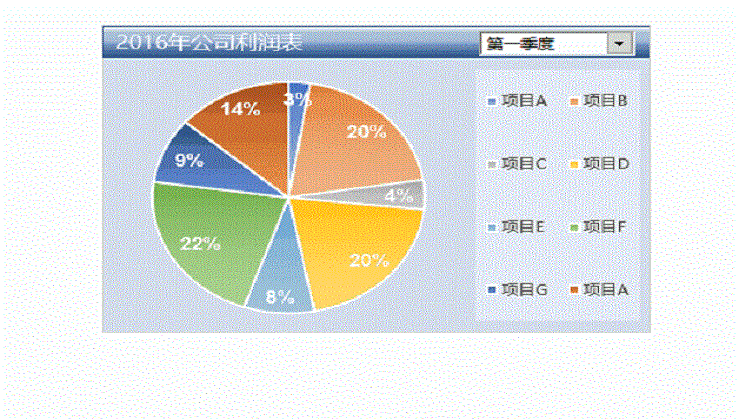